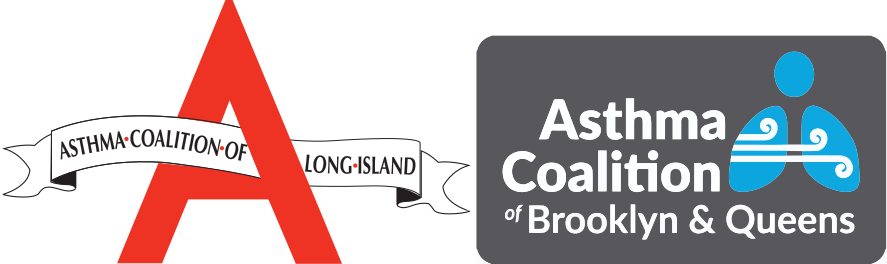

Content & Design Developers
Lisa Romard
MS, CPNP, ANP, AE-C
Linda Cimino
EdD, MS, CPNP, ANP, CCRC, CHSE

Conceptualized by
Lisa Romard
MS,CPNP, ANP, AE-C
Nurse Practitioner
Certified Asthma Educator
Stony Brook Children’s
Division of Pediatric Pulmonary & Allergy
Content & Design Developers
Lisa Romard
MS, CPNP, ANP, AE-C
Linda Cimino
EdD, MS, CPNP, ANP, CCRC, CHSE
Technical & Graphic Design
SBU Teaching Learning Lab
Paul St. Denis - Digital Media Developer
Kari Barry
Razz Joseph
Gregory Lucci
James Palmeri
Anya Sklyarova
Shu Wen Yang
Music by Twisterium
Content Research
Jignisha Patel MS, RN SB SON
Christy Etsch MS, RN SB SON
Content Review
Anne Little MPH, AE-C
Claudia Guglielmo MPH, AE-C
Directors of Health Promotions, American Lung Association
Asthma Coalition of Long Island (ACLI) Asthma Educators

Sources and Research
Asthma and Allergy Foundation of America
www.aafa.org/asthma-triggers-causes/
American Academy of Allergy, Asthma and Immunology
American Lung Association
Environmental Protection Agency
Centers for Disease Control and Prevention
www.cdc.gov/asthma/triggers.html
National Heart, Lung, and Blood Institute
www.nhlbi.nih.gov/health-pro/resources/lung/naci/
www.nhlbi.nih.gov/health-topics/guidelines-for-diagnosis-management-of-asthma
National Jewish Center